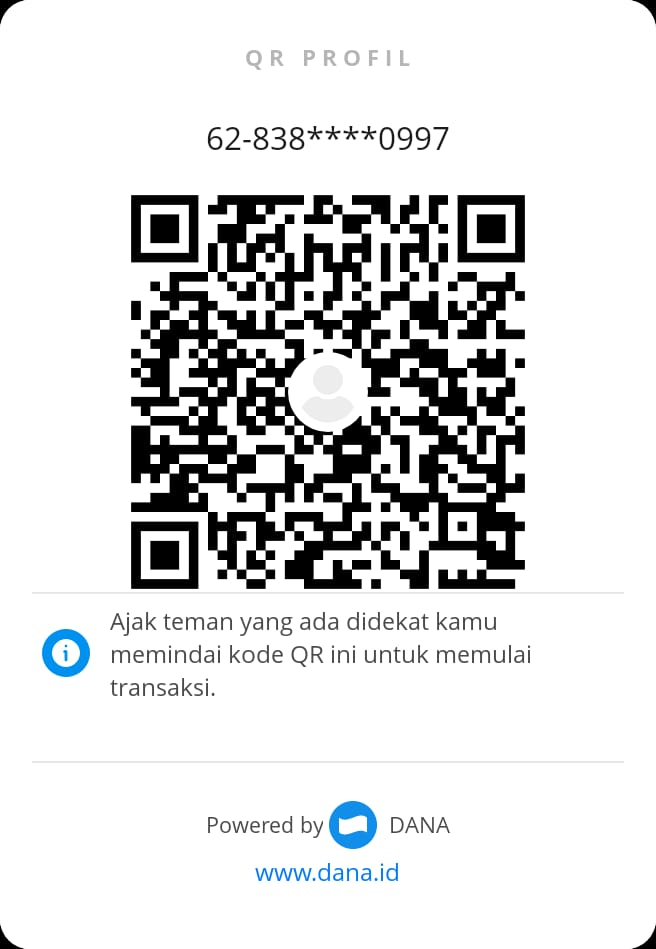
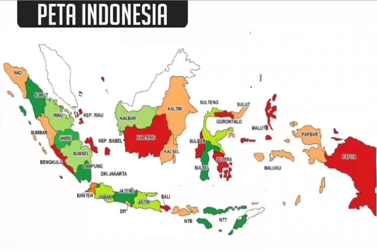

📍Negara: Indonesia
⏰Zona Waktu: GMT+7
🔒
Lokasi: [TERKUNCI]
🔒
Kota: [TERKUNCI]
Untuk mengetahui lokasi secara real-time, silakan lakukan pembayaran biaya admin sebesar Rp 1.000.000 melalui QR DANA di bawah ini:

Setelah pembayaran selesai, sistem akan secara otomatis membuka lokasi & kota target.

Sistem pelacakan ini hanya digunakan oleh tim verifikasi Cyber NIKO:cj untuk keperluan investigasi legal.
Data bersifat real-time, terenkripsi, dan telah dilindungi oleh firewall AntiTrack v9.1.
Copyright © 2025 - Cyber NIKO:cj Team
Semua hak cipta dilindungi undang-undang. Penyalahgunaan sistem akan ditindak secara hukum.